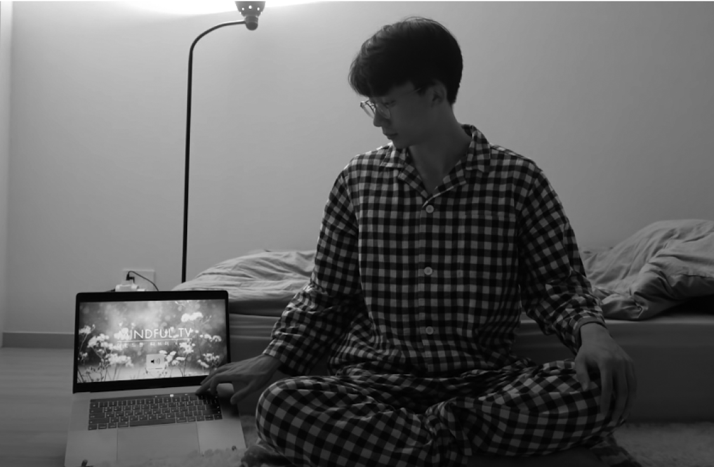
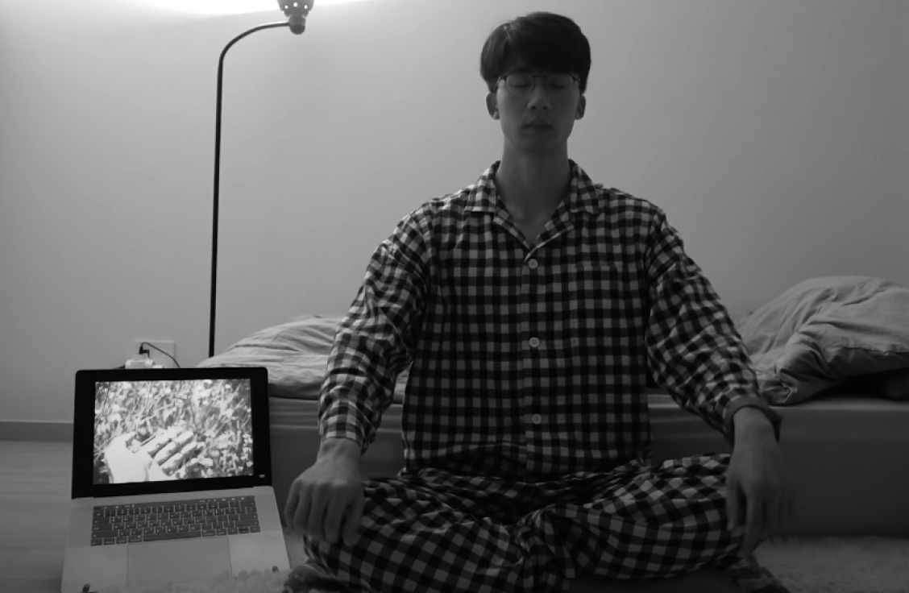

감정과 생각을 내려놓고 명상할 수 있을까
내가 롤모델로 생각하는 닮고 싶은 사람이 있다. 바로 다큐멘터리 감독이자 유튜버인 맷 디아벨라(Matt D’Avella)다. 그는 주로 미니멀리즘, 시간 관리, 건강한 삶 등 라이프스타일과 자기계발에 관한 영상을 제작한다. 쉽게 말해 ‘미국의 한국타잔’이다(사실은 내가 ‘한국의 맷 디아벨라’일지도……).
이 채널은 2년 전 우연히 발견했는데 공교롭게도 나와 겹치는 주제가 많았다. 나보다 영상미도 훨씬 좋고 소재도 다양했지만 채널을 아우르는 분위기나 콘셉트가 정말 비슷해서 누가 보면 한국타잔이 맷 디아벨라의 카피캣이라고 오해받을 정도였다(적어도 한 달 동안 5시에 기상하기는 내가 먼저 시작했다). 워낙 겹치는 부분이 많다 보니 이 채널에서 많은 영감과 아이디어를 얻었는데, 한번은 ‘I meditated 1 hour everyday for 30 days(30일 동안 매일 한 시간씩 명상해보았습니다)’라는 영상이 올라왔다.
이 영상에서 디아벨라는 한 달 동안 명상으로 ‘마인드풀니스(mindfulness)’를 체험했다고 언급했다. 마인드풀니스는 한국어로 하면 ‘마음챙김’인데, 현재의 순간을 있는 그대로 받아들이는 상태를 의미한다. 완벽하게 이해되지는 않았지만 명상으로 감정과 생각을 내려놓고 현재 상황을 객관적으로 바라보는 상태가 아닐까 싶었다. 그런데 디아벨라가 마인드풀니스를 계속해서 언급하는 걸 보니 구체적으로 어떤 체험인지 궁금했다. 오직 직접 실천해보는 것만이 답이었으므로 곧바로 명상에 도전했다.
다만 엉덩이가 가벼운 나는 한 시간이나 명상하기는 도저히 불가능할 것 같아 30분만 하기로 했다.
✔ 목표: 매일 30분씩 명상을 한다.

문득 깨달음을 얻게 되는 몰입의 순간
명상을 제대로 해본 적도, 어떻게 하는지 배운 적도 없기 때문에 우선 유튜브의 도움을 받기로 했다. ‘명상’이라고 검색하니 5분에서부터 한 시간, 숙면을 돕는 몇 시간짜리 영상까지 다양한 시간대로 구성된 가이드 영상이 우르르 쏟아졌다. 나는 그중에서 조회수가 가장 높고 내가 정한 시간과 맞는 ‘마인드풀tv’의 ‘생각 비우기 명상’ 30분짜리를 선택했다.
잠들기 직전에 명상하기로 했기 때문에 우선 씻고 잠옷을 입고 나와 침대 앞에 양반다리를 하고 앉았다. 노트북으로 영상을 켜고 나레이션에 따라 호흡을 조절했다.
숨을 내쉬며 나의 몸과 마음이 이완됩니다. 숨을 들이마시며 산소가 나의 코를 지나 폐로 내려가 온몸을 지납니다.
당최 무슨 말인지 모르겠다. 당연히 숨을 내쉬면 밖으로 나가고 들이마시면 코를 지나 폐로 들어가겠지! 굳이 왜 이런 말을 하는지 이해가 가지 않았지만, 반신반의하며 계속 이어 나갔다.
크고 작은 생각들이, 나의 매 순간이 나에게 스며들 때 나는 아무런 평가를 하지 않습니다. 다만 편안한 마음으로 그들을 쳐다봅니다. 그 생각이, 그 마음이 나에게 속해 있는 존재가 아니고 나와 분리된 존재라는 것을 관찰해봅니다.
아니 이건 또 무슨 말인가. 내 생각과 마음이 나와 분리된 존재라는 것을 관찰하라고? 명상 첫날부터 혼란스러웠다. 분명히 생각을 비우는 방법이라는데 머릿속은 점점 더 복잡해지고 있었다. 그냥 그만두고 싶다는 생각도 들었지만, 혼자서 명상하는 방법은 모르니 어쩔 수 없이 꾸역꾸역 계속했다.
그렇게 15분의 가이드와 15분의 자연음이 흘러나오고 영상이 끝났다. 첫날 느낀 점은 ‘엉덩이가 아프다’뿐이었다. 제대로 명상이 됐는지 아닌지도 모르겠어서 찝찝했다. 아무것도 알아보지 않은 채 무작정 시작한 것 같아 이런저런 글들을 찾아보았다. 그러다 흥미로운 내용을 하나 발견했다.
인간은 한 시간에 2,000가지 생각을 한다고 한다. 24시간이면 4만 8000가지나 되는 생각을 하는 생각덩어리다. 우리나라에는 ‘오만가지 생각’이라는 말이 있는데, 이 말에 과학적 근거가 있는지는 모르겠지만 영 틀린 소리는 아니었던 셈이다. 결국 명상이란 잠시라도 복잡한 머릿속을 조금이나마 비우기 위한 처방이었다.
다음 날, 나는 같은 영상을 틀고 다시 명상에 도전했다. 이번에는 엉덩이에 집중하지 않도록 이불을 포개어 바닥에 깔고 앉았다. 그래도 역시 쉽지 않았다. 자꾸만 생각을 비우자는 생각에만 집중했다. 그래서 그냥 영상에서 흘러나오는 말에만 귀 기울이자고 생각했다.
숨을 내쉬며 나의 몸과 마음이 이완됩니다. 숨을 들이마시며 산소가 나의 코를 지나 폐로 내려가 온몸을 지납니다.
전날과 똑같은 말인데 어쩐지 다르게 다가왔다. 숨을 내쉴 때는 의식적으로 몸을 이완했고 들이마실 때는 산소가 코를 지나 폐로 들어가는 느낌에 집중했다. 잠시 후, 호흡에 온 신경을 쏟는 동안 내가 다른 생각을 전혀 하지 않고 있다는 것을 깨달았다.
‘호흡에 집중한다는 게 이거구나.’
명상에서 왜 호흡이 중요한지 이틀 만에 알게 됐다. 단지 느낌일 수도 있지만 숨을 들이마실 때 공기가 온몸 구석구석으로 스며든다고 생각하니 정말로 그런 것 같았다. 숨을 내쉴 때도 내 몸에 가득 차 있던 공기가 빠져나간다고 생각하자 마치 몸이 붕 뜨면서 편안해졌다. 그리고 명상이 끝나고 나면 비로소 정말 아무 생각 없이 집중했다는 것을 알게 되었다. ‘생각 비우기’가 가능해진 것이다.


호흡에 온 신경을 쏟는 동안
내가 다른 생각을 전혀 하지 않고 있다는 것을 깨달았다.
‘호흡에 집중한다는 게 이거구나.’
한번 방법을 터득하자 이후부터는 훨씬 수월했다. 영상에서 이야기하는 생각, 마음, 감정 등의 말에는 굳이 신경 쓰지 않고 오로지 호흡에만 몰두했다. 마치 영화를 볼 때 그 내용에만 집중해 다른 생각은 전혀 하지 않는 것처럼 말이다. 그렇게 하다 보니 그 순간만큼은 ‘생각’으로부터 자유로워졌다.
이때부터는 명상을 밤에만 하지 않고 수시로 해봤다. 일을 시작하기 전에, 걱정되는 일이 생겼을 때, 스트레스를 받을 때 그곳이 어디든 잠시 눈을 감고 깊게 호흡했다. 짧게는 30초, 길게는 30분도 할 수 있었다. 그러자 신기하게도 그 순간만큼은 걱정에서 벗어나 마음이 차분히 가라앉았다. 내 감정을 스스로 관리할 수 있게 된 것이다.
명상은 특히 숙면에 큰 도움이 되었다. 잠들기 전에 짧게라도 명상을 하면 평소보다 훨씬 수월하게 잠에 빠졌다. 30분짜리 명상 영상을 틀어놓으면 10분도 안 되어서 잠이 쏟아졌고, 그럴 때 곧바로 영상을 끄고 침대로 직행하면 금세 숙면을 취할 수 있었다.
그 이유는 간단했다. 숙면에서 가장 중요한 요소는 뇌를 쉬게 해주는 것이다. 그런데 나뿐 아니라 대부분의 사람이 잠들기 직전까지 핸드폰을 손에서 놓지 못하고 온갖 정보에 스스로를 노출시킨다. 그러다 보면 잡생각이 생기면서 뇌가 쉬지 못해 쉽게 잠들지 못하게 된다. 반면 명상을 하면 생각이 비워지고 뇌가 휴식을 취하게 되어 마음뿐만 아니라 몸까지 편안한 상태를 유지할 수 있는 것이다.

마음을 비우고 컨디션을 최상으로 끌어올리는 순간
이번 도전을 하기 전까지 본격적으로 명상을 해본 적이 없는 나는 어쩔 수 없이 영상의 도움을 받았지만, 사실 명상에 왕도는 없다. 한국심리학회에서 정의한 명상이라는 단어를 보면 ‘마음의 고통에서 벗어나 아무런 왜곡 없는 순수한 마음 상태로 돌아가는 것을 초월이라 하며 이를 실천하려는 것’이라고 한다. 따라서 백지 같은 하얀 마음, 무념무상의 상태로 돌아가 오롯이 나의 내면에만 집중할 수 있다면 무엇이든 명상이라고 부를 수 있다는 이야기다.
팀 페리스가 쓴 《타이탄의 도구들》이라는 책을 보면 성공한 사람들의 공통적인 아침 습관 중에 빠지지 않고 등장하는 것이 명상이라고 한다. 이 일은 ‘각’ 잡고 앉아 거창하게 하는 의식이라기보다 5~10분 가볍게 마음을 비워내는 작업이다. 각자 좋아하는 조용한 음악이나 화이트노이즈 같은 집중할 만한 소리를 틀고 눈을 감은 채 몰입하면 된다. 그 외에도 명상에 빠지는 방법은 각양각색이다. 다만 이 작업으로 그들이 얻는 효과만큼은 동일한데, 차분한 마음으로 하루를 준비하고 그날의 컨디션을 최상으로 끌어올리는 것이다.
한 달간의 도전이 끝난 이후로 매일 명상을 하지는 못했지만 방법을 터득하고 나니 마음만 먹으면 언제 어디서든 명상할 수 있게 되었다. 지금은 회사에서 점심을 먹고 오후 일을 시작하기 전에 1분 정도 숨을 가다듬는 습관이 생겼다. 명상이라고 할 것도 없이 잠시 숨을 깊게 들이마시고 내쉬면서 호흡에 집중하는 것뿐이지만, 그러면 신기하게도 스트레스가 해소되고 자신감이 생겨난다.
무엇이든 처음이 어렵다. 더구나 명상은 나만의 방법만 터득하면 어떤 도구도, 노력도 필요 없는 가장 손쉬운 생각 비우기 훈련법이다. 몸과 마음에 휴식이 필요할 때, 거창한 의식 대신 명상을 해보면 어떨까?
자, 이제 다음 장을 쓰기 전에 숨을 크게 들이쉬고 내쉬어봐야겠다. 갑자기 자신감이 샘솟는다!